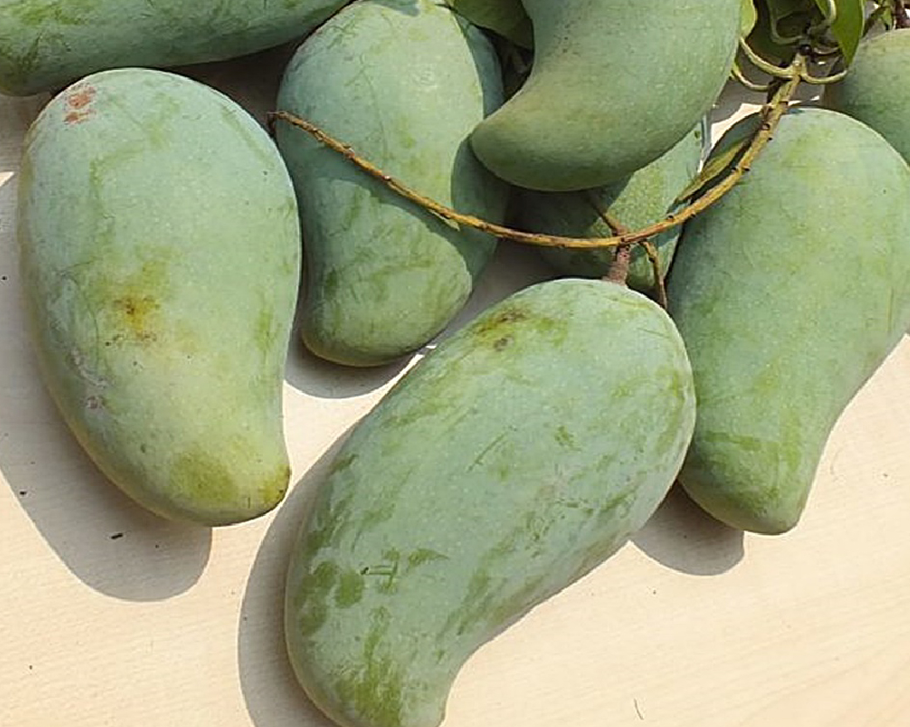

มะม่วงมันศาลายา

มะม่วงมันศาลายา อยู่ในกลุ่มมะม่วงทะวาย ติดดอกออกผลง่าย ให้ผลดกเป็นพวงและติดผลได้ตลอดปี เช่นเดียวกับ “มะม่วงแก้วลืมคอน” สามารถรับประทานได้ทั้งผลดิบและสุก ผลดิบจะมีรสชาติมันกรอบหวานปนเปรี้ยวนิดๆ ฉ่ำน้ำ ผลสุก เนื้อแน่นเหนียวไม่เละ และไม่มีเสี้ยน น้ำหนักเฉลี่ยอยู่ระหว่าง 3 ผล ต่อ 1 กิโลกรัม มะม่วงมันศาลายา เหมาะสำหรับปลูกเป็นไม้ผลประจำบ้าน เพื่อเก็บผลรับประทาน และ ปลูกเพื่อเก็บผลขายได้ทั้งปี